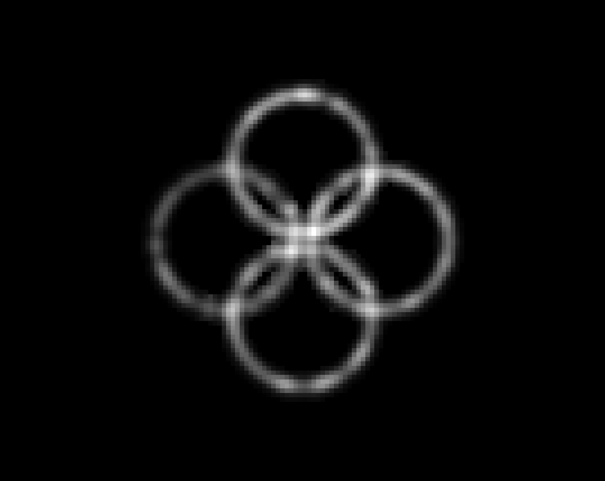
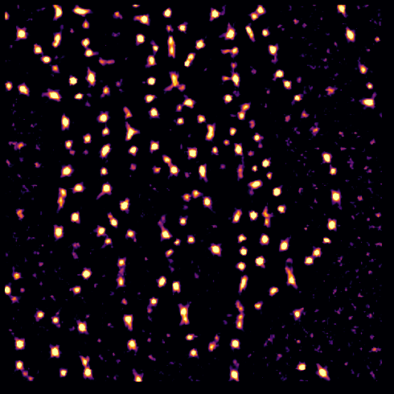
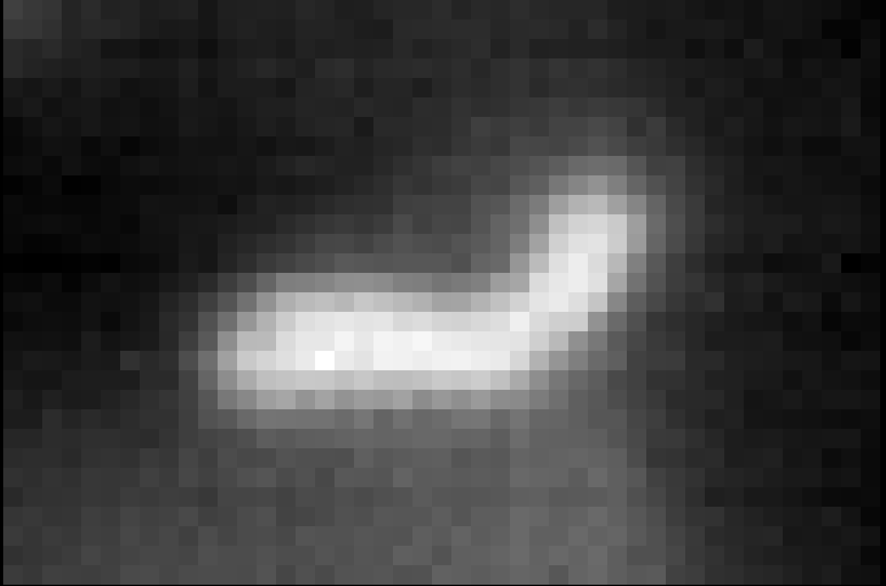
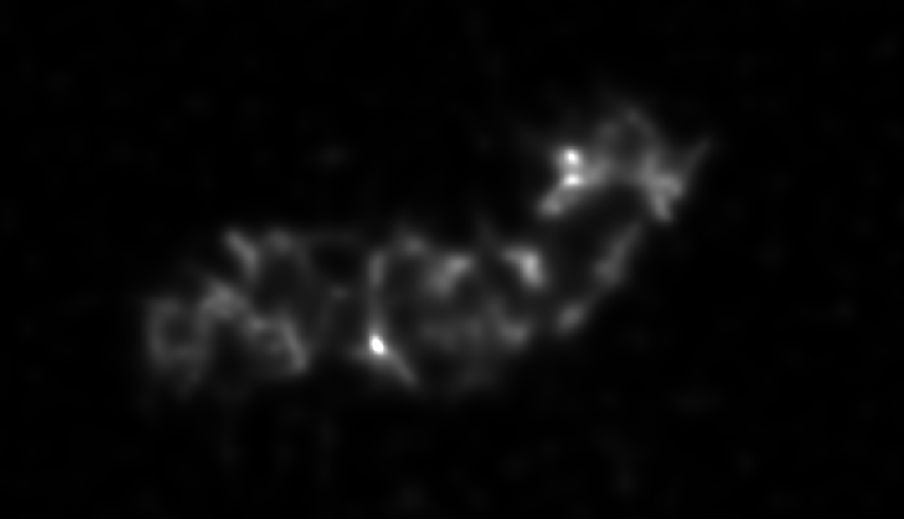

This is some basic, sample markdown.


A plugin for super-resolution microscopy FF-SRM methods.
Open-source implementation of methods for Fluorescence Fluctuation based Super Resolution Microscopy (FF-SRM):
Methods implemented:
Repositories available:
This napari plugin was generated with Cookiecutter using @napari's cookiecutter-napari-plugin template.
First install napari viewer:
conda create -y -n napari-env -c conda-forge python=3.9
conda activate napari-env
pip install "napari[all]"
For details check: https://napari.org/stable/
To install latest development version :
pip install git+https://github.com/RoccoDAnt/napari-superres.git@Dr2-JMM
You might need to install git first.
Examples of use:
| Original | tMSSR |
|---|---|
|  | |
| Parameters: | Amplification: 2, Order: 0, PSF FWHM: 6, Interpolation: Bicubic, Statistical integration: CV*sigma |
| Original | ESI |
|---|---|
 |
 |
| Parameters: | nrResImage: 1, nrBins: 2, esi_order: 1 |
| Original | SOFI |
|---|---|
 |
 |
| Parameters: | Amplification factor: 2, Moment Order: 4, lambda parameter: 1.5, No. Iterations: 20, Window size: 100 |
| Original | SRRF |
|---|---|
 |
 |
| Parameters: | magnification: 2, spatial radius: 1, symmetry Axis: 1, f_start: 0, f_end: 3 |
| Original | MUSICAL |
|---|---|
|  |  |
| Parameters: | Emission [nm]: 510 NA: 1.4, Mag: 100, Pizel size: 8000, Threshold: -0.5, Alpha: 4, Subpixels per pixel: 20 |
Contributions are very welcome. Tests can be run with tox, please ensure the coverage at least stays the same before you submit a pull request.
Distributed under the terms of the BSD-3 license, "lnma-superres" is free and open source software
If you encounter any problems, please file an issue along with a detailed description.
Blockquote
And bold, italics, and even italics and later bold. Even strikethrough. A link to somewhere.
And code highlighting:
var foo = 'bar';
function baz(s) {
return foo + ':' + s;
}
Or inline code like var foo = 'bar';.
Or an image of bears
The end ...